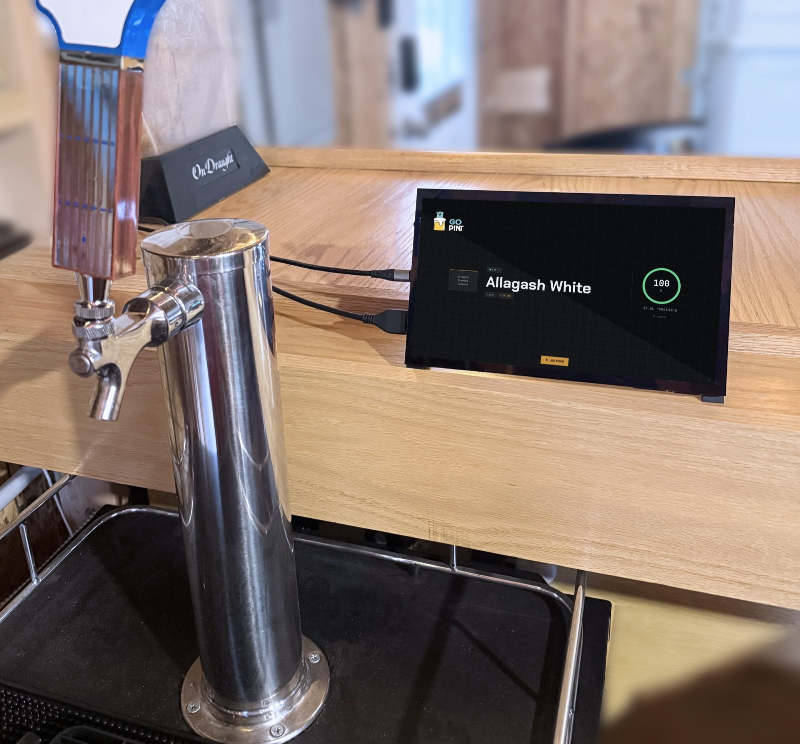
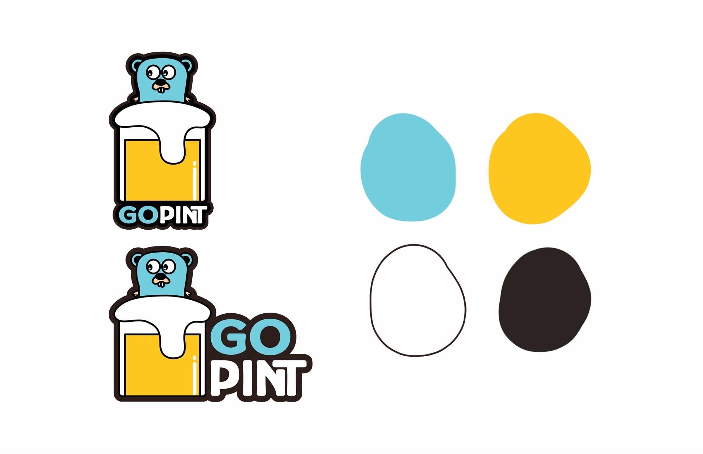

GoPint
Brand Identity
GoPint is a logo design project for a home kegerator tracking app that monitors how much beer is left in the keg. The name is a play on GoLang, the coding language used to build the app, and developers who build with GoLang traditionally incorporate the iconic blue gopher mascot into their branding. I designed a logo that nodded to that tradition while giving it a fun, drinkable personality that actually felt at home on a beer app. The result is a mark that speaks fluently to the developer community while still being approachable enough for the everyday home brewer cracking open a cold one.

